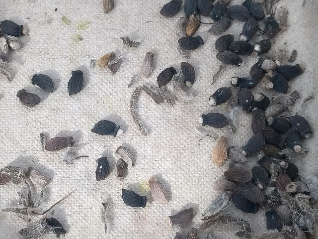
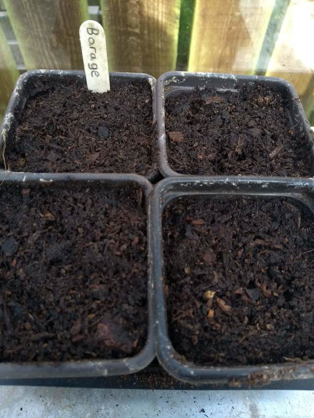
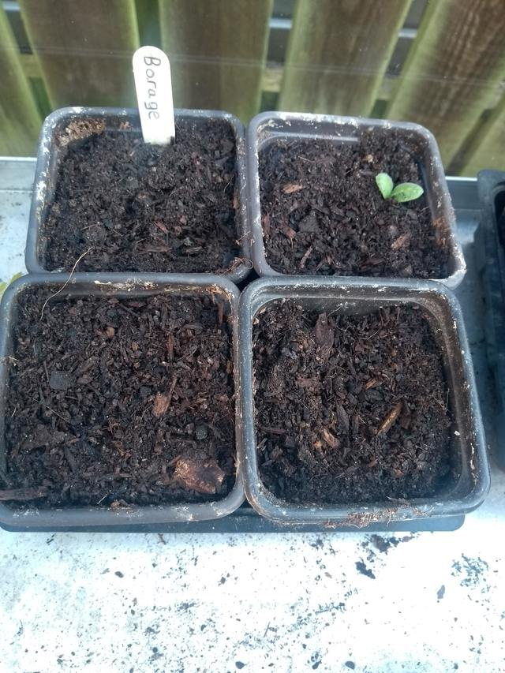
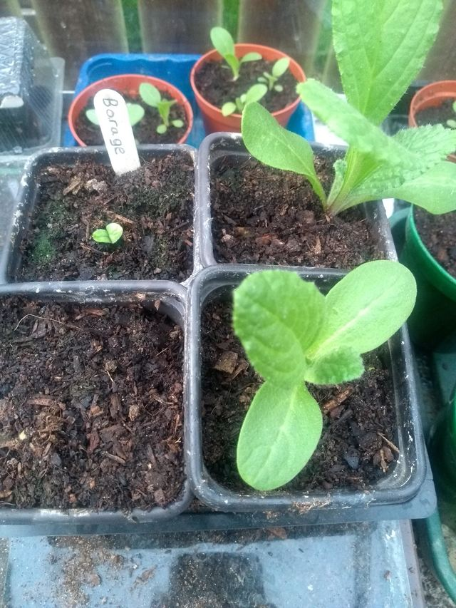
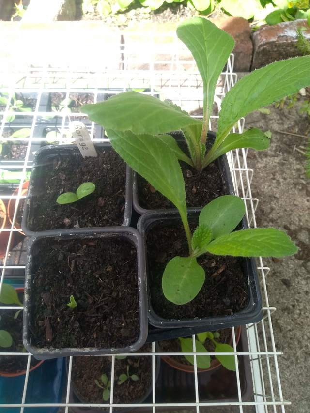
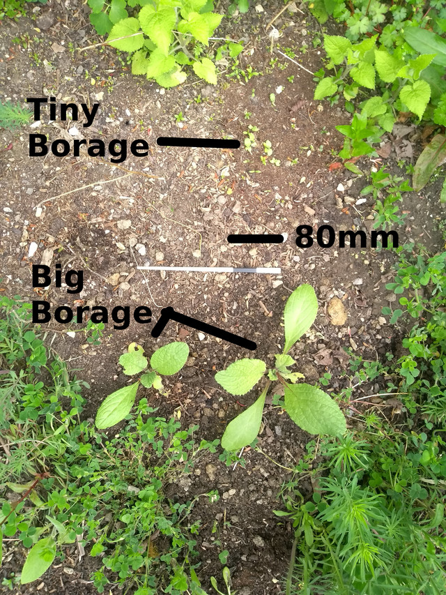

Planting Borage
by David JonesBorago officinalis
Borage is often regarded as a weed, but I wanted some in our garden and we didn't have any. Once established it is known to self-seed reliably and freely. So the only problem is getting one.
Short version: Find a plant; dry it slowly over winter; remove seeds; plant in spring indoors with ordinary potting compost.
At the end of last year while tidying up Mum's garden, we pulled a mature Borage specimen and stored the whole plant in a big paper sack in the greenhouse over winter.
Come spring the plant material was quite dry. Over the course of a fairly tedious hour or so, I got rid of all stalks and stuff, and concentrating on the bits of the plant that hold seeds separated it three piles: actual seeds; not seeds; bits of seed pod that are too hard for me to get seeds out of that may or may not contain viable seeds.

Not knowing what to do for best results I hedged my bets.
Some of the seed I planted in pots in commercial potting compost, thinly covered. Kept moist and covered.

The rest of the seed went outside. I found some poor soil (probably soil from last years tomatoes or something like that), made a small patch in our garden's wildflower area, and sprinkled some seed on, and watered in.
The stuff that may or may or contain viable seeds got scattered at random amongst various bits of the garden with no preparation.
Key dates
March 21 separated seed
March 22 planted
16 days after planting (April 7). A sprout appears! Woohoo! And a few days later a second one appears, but I don't seem to have recorded when.

35 days after planting. Imagine my surprise when more than 2 weeks after the first sprout, another one appears! I had given up on the other two pots.

41 days after planting (May 2). Come the beginning of May I think the first two are ready for planting out in the garden. But a fourth sprout has appeared!

At some point at least a few of the seeds I planted outside sprouted. I can't remember when, and I didn't take a photo.
You can see from the most recent photo (below) that the Borage that started in the greenhouse is far ahead of the seed that was planted out:

In conclusion Borage can be grown from collected seed. Better results if you plant it conventionally in a pot first, but seemingly okay to scatter larger amounts on open ground.